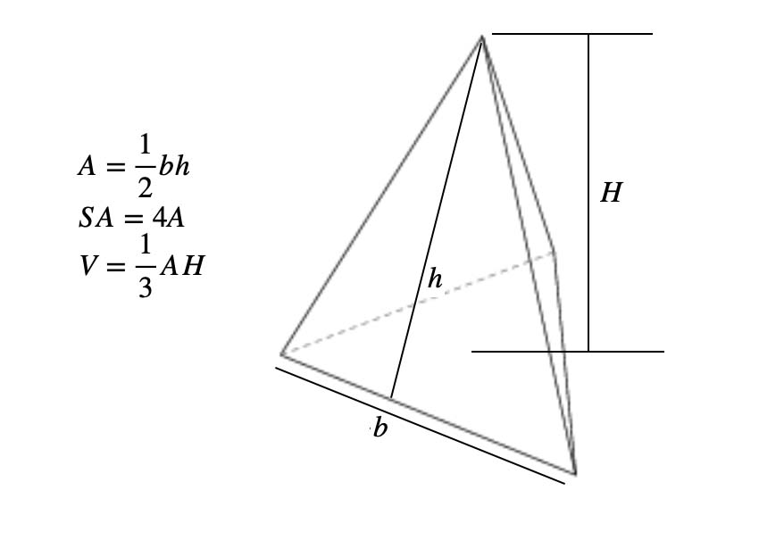

Consider a triangular pyramid:

Since surface area and volume of a triangular pyramid using the area of a triangle, it makes the code more efficient by returning the formula.
Exercise:
Using the methods in the example above, create a program that calculates the surface area and
volume of a cylinder using area of a circle. I started the program for you and defined pi.